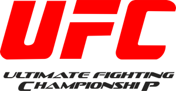
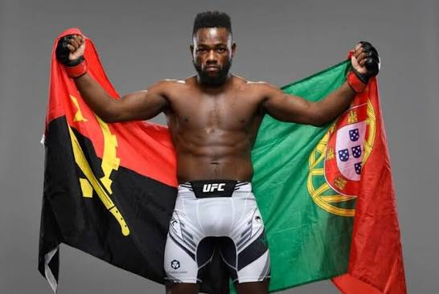
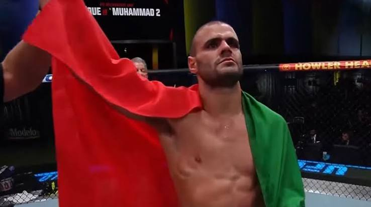
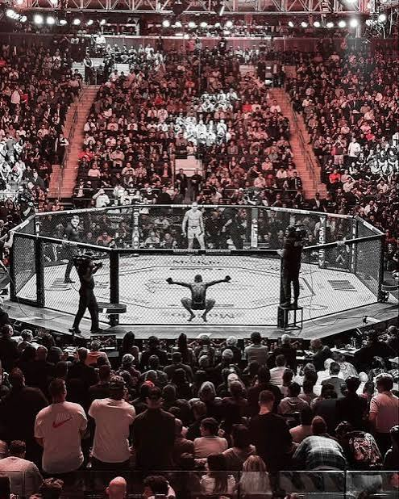

| Categoria | Atleta | Nacionalidade |
|---|---|---|
| Peso-Pesado (Heavyweight) | Jon Jones | Estados Unidos |
| Peso-Meio-Pesado (Light Heavyweight) | Alex Pereira | Brasil |
| Peso-Meio-Médio (Welterweight) | Georges St-Pierre | Canadá |
| Peso-Leve (Lightweight) | Khabib Nurmagomedov | Rússia |
| Peso-Pena (Featherweight) | José Aldo | Brasil |
| Peso-Galo Feminino (Bantamweight) | Amanda Nunes | Brasil |
Apesar de Portugal ainda estar a construir a sua história nas artes marciais mistas, já conta com representantes de enorme destaque que levaram a bandeira nacional ao Octógono mais famoso do mundo:
|
 |
|
 |
Top 3 Combates Históricos
|
 |